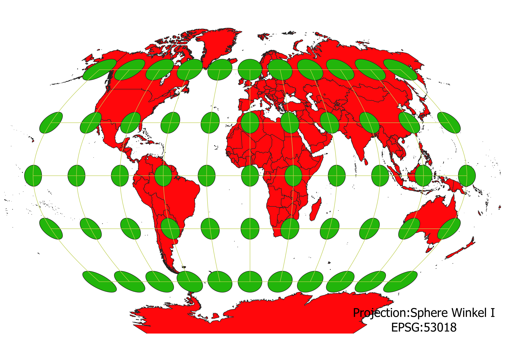

Colton Sands World Projections
Describe in your own words how you displayed the map in different projections using QGIS
To create the projections, I loaded the data into QGIS and then clicked on the EPSG and typed in my desired projection. I then applied it and saved the map via the print layout feature. If I were to want to save the data I would export the shp file as a geojson in the desired projection.
WGS84 Projection
This projection maintains directions and does an okay job at keeping shape. The shape does become distorted at the poles, and the area is also distorted.

Aitoff Projection
This projection does a good job of maintaining shape and area in a T shape from the center of the projection. I looked it up and found that it is azimuthal. Towards the corners, the shape and area become distorted, and the angles are messed up throughout.

Pseudo Mercator
This projection maintains direction and shape throughout. However, the area becomes messed up throughout, and the map seems to be horizontally compressed, causing the poles to appear higher than other projections.
Sphere Winkel I
This projection does not perfectly maintain anything, but nothing is terribly distorted either. All distortions become worse the further from the center you go, especially vertically.

World Equidistant Conic
Area and shape are very distorted in the southern hemisphere. The northern hemisphere is projected well, aside from the obvious directional changes. The title seems to suggest the distance is accurately represented, which seems to be true as all vertical lines look about the same length, however the horizontal lines are not.
World Cylindrical Equal Area
As the title suggests, the area seems to be maintained well. Shape is distorted a lot, especially away from the equator where it gets squashed, for lack of a better word.
World Goode Homolosine Land
I had to do some research because given the image from QGISI was very confused by this projection. The map is actually supposed to be 4 separate sections, like an orange peel. This allows it to preserve the area. The way it is broken up causes most distortion to appear in the ocean, meaning the continents are fairly well preserved, as can be seen.
North Pole Azimuthal Equidistant
This projection shows the Earth from a plane on the North Pole. Area and shape are well preserved in the northern hemisphere, and distortion becomes bad the further south you go. This is similar to the conic projection but it is a full sphere, rather than having a break.
South Pole Azimuthal Equidistant
This projection is the inverse of the previous, with the plane being laid on the south pole.
Data used for this project
Download Natrual Earth 1:10m Cultural Vector